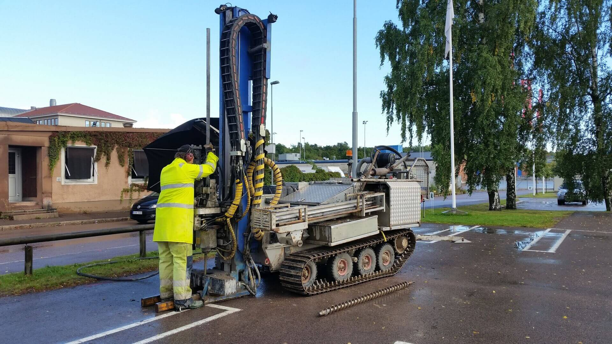
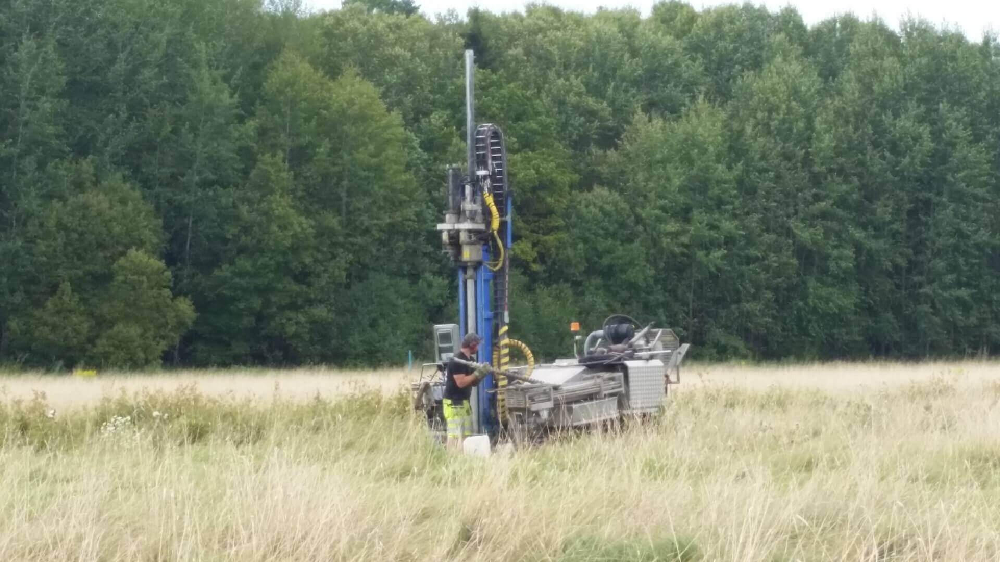
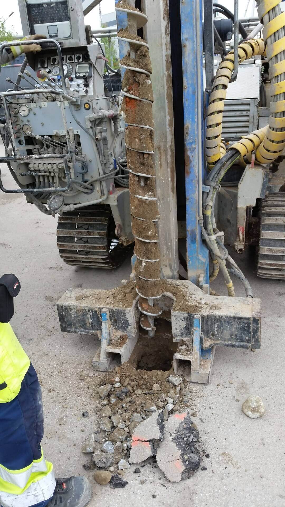
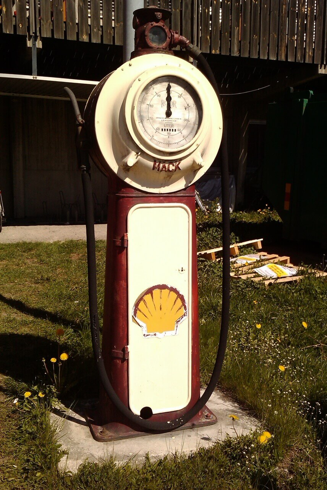
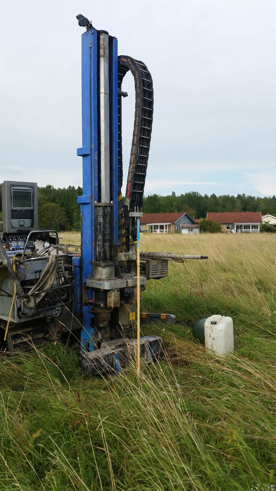
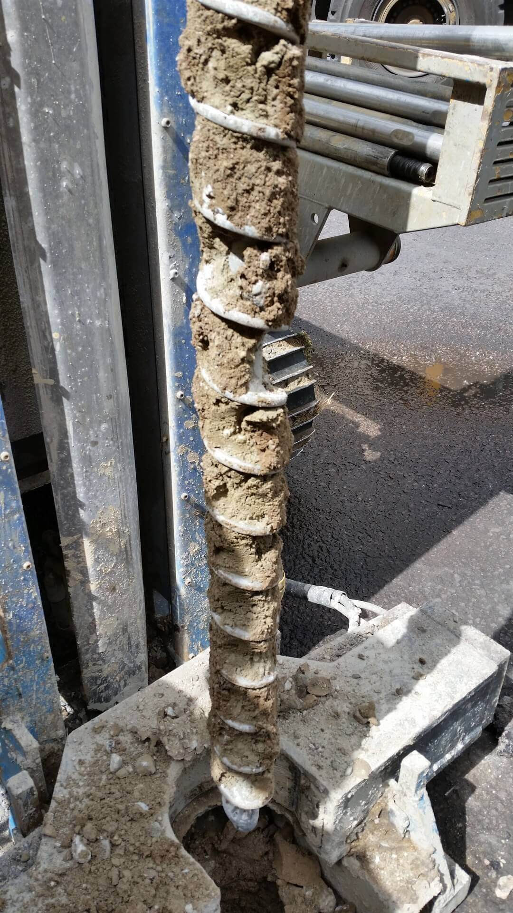
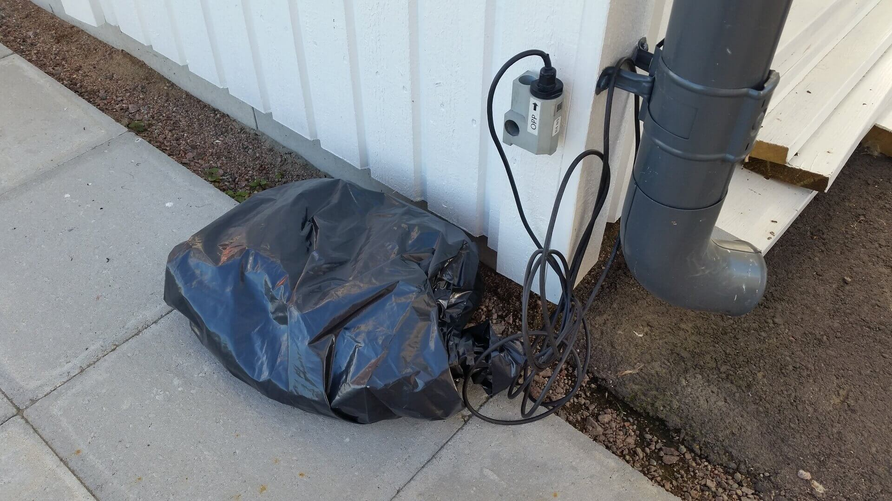
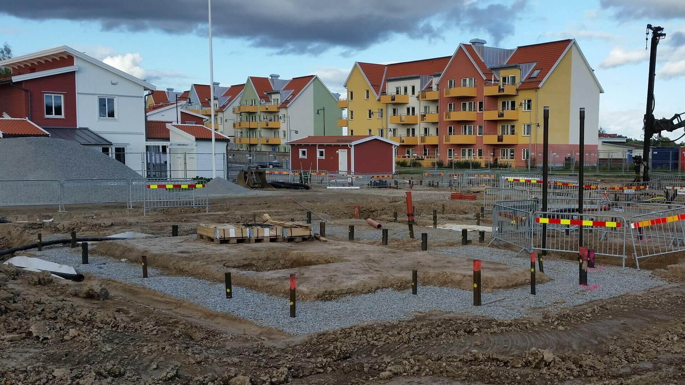

Brett stöd från fält till beslut
Genom ett brett kontaktnät och samarbetspartners i branschen kan vi erbjuda tekniska lösningar för flera typer av frågeställningar och även bidra till helhetslösningar.
Gren Consulting AB
Tekniskt stöd för bygg-, mark- och exploateringsprojekt i Västerås, Mälardalen och övriga Sverige.
Välkommen
Vi har mer än 20 års erfarenhet av att utföra konsultuppdrag för våra kunders räkning. Gren Consulting startade 2012 och är ett aktiebolag från 2015.
Vi arbetar med många typer av kunder, bland annat privatpersoner, fastighetsföretag, entreprenörer, andra konsulter, kommuner och landsting.
Tjänster
Vi erbjuder expertis inom geoteknik, markmiljöundersökningar, förorenade områden, omgivningspåverkan, tillståndsprocesser, projektledning, beställarstöd samt utbildningar och kurser.

Genom ett brett kontaktnät och samarbetspartners i branschen kan vi erbjuda tekniska lösningar för flera typer av frågeställningar och även bidra till helhetslösningar.

Utredningar och fältprovtagning med geoteknisk borrbandvagn eller grävare.

Fältprovtagning, ackrediterade kemiska analyser och underlag för bedömning.

Provtagning, analyser och tekniskt stöd i frågor som rör förorenad mark.

Omgivningspåverkan, tillstånd, anmälningar, projektledning och beställarstöd.
Om oss
Gren Consulting grundades år 2012 och är från och med 2015 ett aktiebolag. Bolaget utgår från Västerås och har kunder både i närområdet, i den expansiva Mälardalsregionen och i andra delar av landet där utbyggnad eller exploatering pågår.
Erfarenheten efterfrågas av privata företag, bygg- och fastighetsbolag, kommuner och statliga verk. Arbetet utgår från kundernas frågeställningar och behov, med målet att bidra till hållbara lösningar på tekniska utmaningar.
Bolaget grundades av VD Mats Gren, civilingenjör VoV från KTH, som har över 20 års erfarenhet som konsult inom anläggnings- och infrastrukturområdet i byggbranschen.
Referenser
Kontakta oss gärna om du vill ha referenser från någon av våra uppdragsgivare. Här visas exempel på områden där vi ofta bidrar med tekniskt stöd.

Provtagning och tekniska underlag inför bygg- och markprojekt.

Bedömningar kopplade till påverkan på omgivande byggnader och miljöer.

Projektledning, teknisk samordning och stöd i tillståndsfrågor.